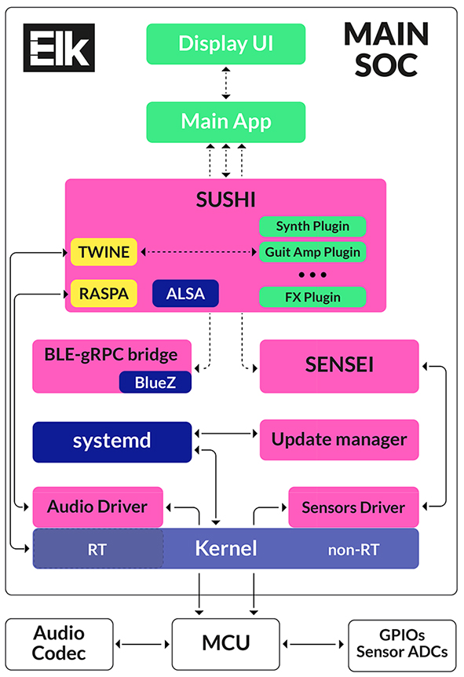

How Elk works¶
This section provides a look under the hood of a device Powered by Elk.
This post is the first in a series that will give you a quick and informal overview of Elk MusicOS and its components for the more tech-savvy of you who want to dive into the details.
Elk is an embedded Linux distribution, highly optimized for low-latency audio and that comes with several components to streamline the development of professional audio and music devices. The supported hardware are either one of our Elk development boards (which we will cover in the next blog post) or custom hardware designed for products powered by Elk, such as the DV Mark Smart Multiamp.
In the design of Elk we have tried to follow a UNIX-like philosophy of having several focused components that “do one thing and do it well”. All of these can be reused for devices of different kinds such as digital FX units, synthesizers, mixers, etc. The only custom work required for each device is then just a matter of writing a small glue application that connects together Elk’s components for the particular use case.
The last ingredients needed for the product recipe are audio processing plugins. Luckily, Elk is able to support standard formats such as VST (both 2.x and 3.x) and Rack Extensions. If you have access to the plugins’ source code is usually trivial to rebuild them for Elk. Or, you could take advantage of the library of plugins that have already been built for Elk by various developers.
What Can You Do With Elk?¶
Rather than dryly go into deep details of the Elk’s software architecture and components, it’s might be easier to describe how they would actually be used in an example product.
So, using a hypothetical Powered by Elk device, which we’ll refer to as “The Box”, to illustrate what a device like this could do and what its software architecture would like. DISCLAIMER: Again, this is not a real product nor anything that is under development, so don’t look around for where you can buy it or get more information about it. It’s true however that it will be easily possible to make a product like this with Elk and indeed we will be showing some proof-of-concept prototypes, as well as the first real powered by Elk product, the DV Mark Smart Multiamp, at our NAMM 2019 booth.
Enough with words, here’s a quick sketch for The Box:

So, what could the hardware components of The Box, besides a main board with a System-on-Chip (SOC) that runs Elk be?
- A Touchscreen display
- Some physical controls e.g. knobs, faders, buttons
- A bunch of LEDs and/or smaller secondary displays
- Audio connections, e.g. TSR or XLR connectors, MIDI 5-din, CV in/out
- Bluetooth Low-Energy (BLE) and WiFi components, plus antenna
- General purpose connectors, such as USB or RJ45 Ethernet
- … and of course a square box where to put all these things together :)
And what could an end user do with such a thing?
- Use it as a standalone FX processor for applications like guitar or vocals
- Use it as a sound module driven by a MIDI controller
- Use it as an USB class-compliant audio interface to connect it with a computer running a DAW
- Share data and performances with an app running on a mobile device
- Connect it to the cloud over WiFi to get updates, sharing presets, etc.
You’re free to use your imagination to give a more interesting shape and/or controls to the device but, for our illustration purposes, we’re pretty ok in just having this feature list.
Software Components Inside an Elk Product¶
Let’s take a look inside The Box or, better, inside the main SOC that runs Elk and see how all the various software components are connected to obtain the desired features.
The following diagram gives you a bird’s-eye on the most relevant pieces and the interconnections between them:

Here’s a very quick description of each block in the diagram. Details about the core Elk components (i.e. those in orange/red) will be given in following posts of this series.
Hardware Components¶
- Main SOC: this is the main IC on the board that contains the CPU and lots of other peripherals (e.g. USB and serial controllers, GPUs). Elk boards use common SOCs that can run Linux and are also found in other embedded or mobile devices, e.g. the Intel Atom Cherry Trail X5-Z8350 or the NXP i.MX7
- Microcontroller (MCU) : this is custom for the various Elk boards and can vary depending on requirements on I/O and price. Its purpose is to ease the communication with the Audio Codec(s) and to interface with General Purpose Input Output (GPIOs) pins or ADC used for sensing potentiometers etc. On different boards we have used XMOS MCUs, Cortex-M4s or tiny CPLDs for this purpose
Standard Linux Components¶
These are open-source software components that are common to most Embedded Linux devices. We tend to adopt the latest stable version of each one of them, usually without significant modifications to their code.
Most of the work in bringing up these parts into Elk is in their integration and configuration. For this purpose we use tools from the Yocto Project, which is an industry-standard tool to create custom embedded Linux distros.
- Kernel: this is a customized version of the Linux Kernel tuned for low-latency. In most of our boards we make use of the Xenomai Cobalt Kernel, which uses a dedicated interrupt pipeline (I-Pipe) to achieve extremely low hard real-time performances. It is often described as a Dual Kernel architecture because a small Real-Time kernel is running on the same memory space as the traditional Linux Kernel. However, the rest of Elk does not depend strictly on Xenomai features and we have successfully used the more common PREEMPT_RT patch in other boards, using core isolation and other optimizations on top of it. In this second case, there is some latency and performance penalty but the results are still good enough for some use cases.
- systemd : as most modern Linux distros, Elk adopts systemd for its init system and many other system components in userspace. The core Elk processes have been designed to take advantage of systemd’s parallelism to minimize device boot time
- Libraries / applications : we leveraged the power of many famous userspace libraries and applications for writing Elk core services and for providing a good set of tools for developers writing product-specific components. Relevant examples are the ALSA project’s userspace libraries (for MIDI) or the BlueZ stack (for Bluetooth connectivity). The full list would be very long here and it includes many pieces of software which are not specific to Linux.
Elk Core Components¶
The list here includes all the custom software written specifically for Elk. There are some variations between Elk boards for some parts (for example, each SOC family usually requires a dedicated driver for the specific peripherals used for audio IO) but the interface towards product-specific components will still be the same.
- Audio and Sensors Drivers : these interface directly with hardware components (codecs, MCUs, etc.) included in the custom boards for Elk. They are designed with the goal of achieving the lowest possible latency so very often we are not using standard Linux infrastructures directly (like ALSA for the audio driver).
- Update Manager : this module/component takes care of deploying software updates to Elk devices, making the process easy and robust for the final user. The system is guaranteed to always boot in a working condition even in presence of power failures during the update.
- BLE-gRPC bridge : as explained in the next section, gRPC is our main choice for connecting Elk blocks to each other and to external devices over WiFi or Ethernet. This component makes it possible to route the same protocols towards mobile devices connected over Bluetooth Low-Energy, which is not a standard TCP/IP connection.
- Sensei : this is a daemon that makes it very easy to handle several kinds of sensors and GPIOs (buttons, LEDs, etc.) on the physical device. The hardware connections can be declared flexibly using a JSON configuration file, without the need for custom software for each device. SENSEI then takes care of creating software events that can be accessed by the product-specific applications. You can think of it as a sort of “physical widgets” framework.
- Sushi : this is the core audio engine behind any device running Elk. It is a multitrack & multichannel live plugin host, with advanced audio & MIDI routing capabilities, Ableton Link integration and much more. In other words, a small DAW included in Elk that you can configure to run VST or Rack Extension plugins.
As with all the other Elk core components, SUSHI is a command line process that is fully configurable with its remote API (more on this on the next section), so it doesn’t ship with any GUI. SUSHI has been developed with the strict requirements of real-time programming in mind in all cases, especially when a Xenomai Cobalt Kernel is employed. The integration with the lower-level drivers & subsystems happens with dedicated libraries: RASPA for interfacing with the custom audio driver, and TWINE to offer a high-level API into common real-time functions such as managing multiple real-time threads for multicore processing and accurate timers. TWINE can also be used by third-party’s plugins.
Gluing Things Together¶
We have seen many components so far but still the questions remain unanswered: “how can we build The Box using Elk”?
The answer is in the remaining green-colored blocks in the diagram that are specific to each device. The good news is that writing these parts is very similar to writing an application for a normal desktop computer, thanks to all the abstractions provided by the underlying layers. Examples are:
- Audio Plugins : as already stated, Elk hosts normal VST and RE plugins, recompiled for the target architecture. It is usually trivial to get a VST plugin that already runs in Linux to run fine under Elk and we provide several tools to aid this process, including a fork of the popular JUCE framework
- Display UI : this is a dedicated process to handle e.g. a Touchscreen Display. Elk does not provide a specific GUI framework but you are free to use any of the popular and well-maintained solutions for this purpose. For example, Qt is a popular choice in many embedded devices.
All of Elk’s core processes (SUSHI, SENSEI, etc.) share these common features:
- Configurable via JSON files
- Can be controlled at runtime using either Open Sound Control (OSC) (for quick prototypes) or a Google’s gRPC protocol
- A logging system configurable and accessible from other applications
The only part that’s missing is a custom Main Application that leverages this distributed infrastructure to connect all the components together for a specific device. For example, this will contain the logic for operations like “choose a different sound and change the display when the user press a button”, or “use the LEDs on the front panel to display a VU Meter”.
Since gRPC is supported by a large number of languages, it is possible to write this component in Python, or Javascript, or Lua, etc. in addition to the conventional choice of C/C++. A cool example workflow might be to quickly prototype the main application in Python and then port it to C++17 for production, without making any changes in the other parts.